Meddbase is a complex, multi-layered EMR system, capable of accommodating a wide variety of workflows and business models ranging from small practices, straightforward setup and only a couple of people using the application, through to global enterprises with thousands of users and nuanced workflows and business requirements.
Meddbase provides a high number of configuration options allowing the application to adapt to complex business scenarios, as well as a host of default settings that it can fall back on when complexity is minimal.
Meddbase can be and is used in Primary Care, Secondary Care as well as in Occupational Health.
This article will explain individual Billing Rule functionality and adding them to (a) Charge Band(s) as follows:
3. Adding Rules to a Charge Band and Rule priority
Choosing which rule to apply in your chamber’s billing rules depends on the billing scenario you are trying to automate and the needs of your business.
A company may conduct business in a straightforward manner, requiring a simple setup in their chamber with only 1 charge band for self-pay patients using only a Price List or a Provide Services rule.
On the other hand, a given business may offer multiple service tiers and receive payments from various debtors, like employers, insurance companies etc. as well as patients. Furthermore, there may be requirements to automate other billing scenarios like cancellation or DNA charges or fee splits for self-employed consultants.
To that end, Meddbase provides a host of Billing Rules that can be added to Charge Bands in various combinations, depending on the scenario. We will discuss each rule individually in the order they are displayed in the system and highlight key relations between them as certain pairs of rules may be mutually exclusive.
If you prefer a visual walk-through, open the videos below.
|
Billing Rules 1 - Charge Band Price List, Provide Services Rule |
|
|
Billing Rules 2 - Rule Types and Priority |
|
|
Billing Rules 3 - Advanced use |
Below you will find descriptions of individual rule types and explanations of their functionality in the order they are displayed when viewed in Admin > Billing Rules > +Add rule...
Click +Add rule and select the required rule from the list.
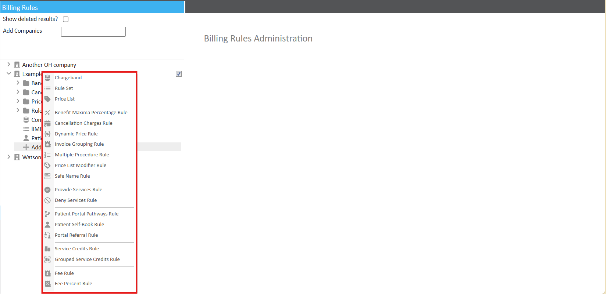
A Rules Set serves as a container you can use to store multiple rules that have something in common, e.g., multiple Price Lists, each applying at a different site, and subsequently add the entire Rule Set to a given Charge Band or Charge Bands respectively. This saves you the trouble of adding individual rules to each respective Charge Band and ensures you add the same set of rules each time.
Furthermore, you can limit the application of the entire rule set to a particular medical professional or role group, a given site and location at that site, and a particular clinician schedule sharing the same tag, which in turn saves you having to apply these settings to each of the rules in the rule set individually.
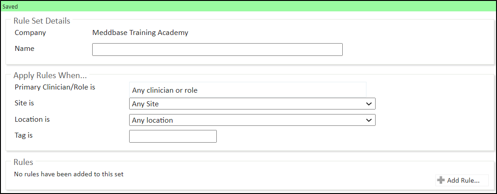
This rule is added to charge bands belonging to 3rd party debtors paying on patients’ behalf, like employers or insurance companies and allows splitting the payment for consumed services between the 3rd party and the patient.
As mentioned in the previous video, when naming rules you can organise them into folders by adding the folder name/ in front of the rule name. Using a new folder name/ will create the folder and using an existing folder name/ will move the rule to that folder.
You can specify the circumstances under which the rule applies or leave it open.
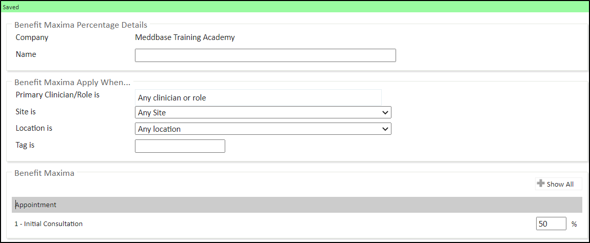
This rule can be added to any charge band where you would want automatic charges to be raised for a patient cancelling, not arriving for, or rescheduling an appointment. Again, use folder name/ in front of the rule name to place it in a folder.
Again, you can specify the circumstances under which this rule applies.
Note that you can configure and add multiple Cancellation Charge Rules to a single Charge Band, e.g., 1 for cancellations, 2nd for DNAs and 3rd for Rescheduling to cover all scenarios. You could also create a rule set for the cancellation rules and add the rule set to the charge-bands where it should apply.
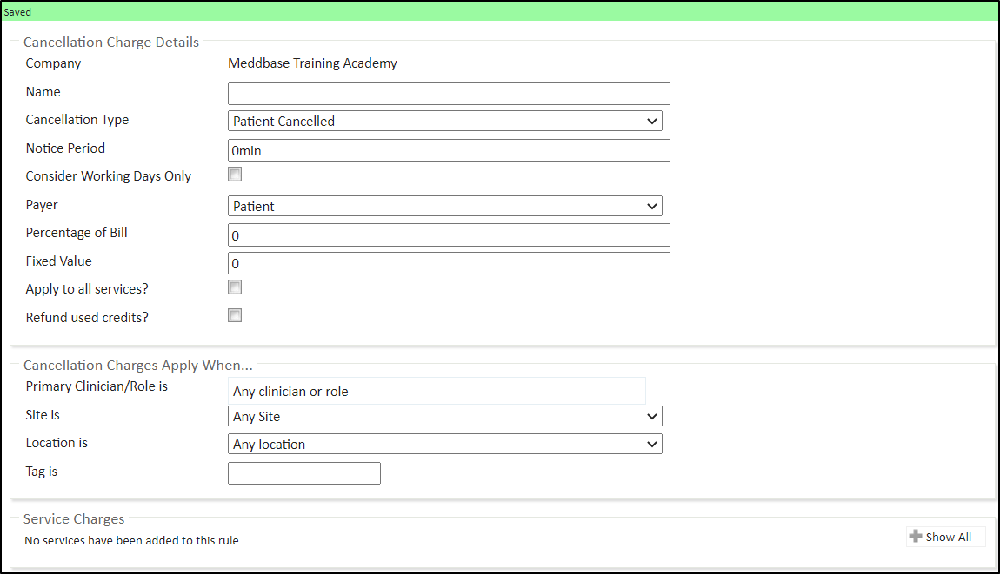
The Debtor Override rule allows you to invoice selected services to a third party, which is different from the company responsible for the charge band. This allows the service activity to still be recorded against the charge band, but the invoice is redirected to another named company (the override debtor). This ensures that specific services are billed correctly when a third party, partner organisation, sponsor, or funder is responsible for payment rather than the charge band owner.
For example, the service belongs to Company A, but the invoice needs to go to Company B (a third party). The Debtor Override tells the system to bill Company B instead.
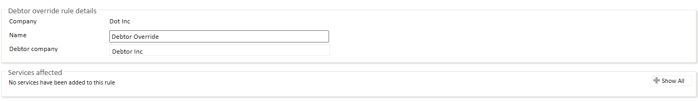
This rule can be used to deny the availability of services on a given Charge Band when the Price List on that Charge Band has the Provide services with prices? Box ticked. Again, you can specify the circumstances under which the rule applies.
To reduce the number of clicks, you can either select the services you’d like to deny in the Services to Deny section or select the services you'd like to provide and tick Deny All, Except Ticked Services (With this option, you will still need a provide service rule to confirm the services to be provided)
If the Deny Services Rule and the Provide Services Rule are added to the same Charge Band and they both apply to the same services, these services will be Denied.
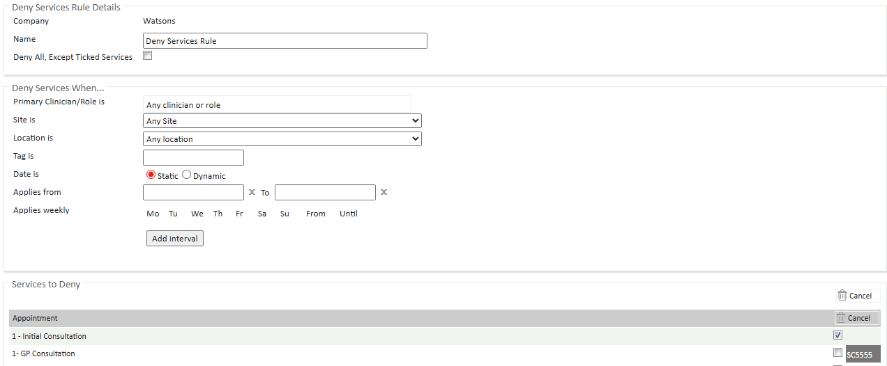
This rule can be added to a Charge Band if you wish to charge a different price for appointments and services depending on the number of free slots available on a clinician’s schedule.
You can specify which doctor or group, site and location and which schedule the rule applies to.
Let’s use an example and define 3 Band Upper Slot Limits at 1, 2 and 3 and set the prices at 500, 400, 300 respectively and 200 for the default row. In this case, booking the last available slot on a clinician’s schedule costs 500, booking 1 of the last 2 available slots costs 400 and booking one of the last 3 available slots costs 300. If there are more than 3 available slots, the booking price is 200.
These prices override the prices set on a price list.
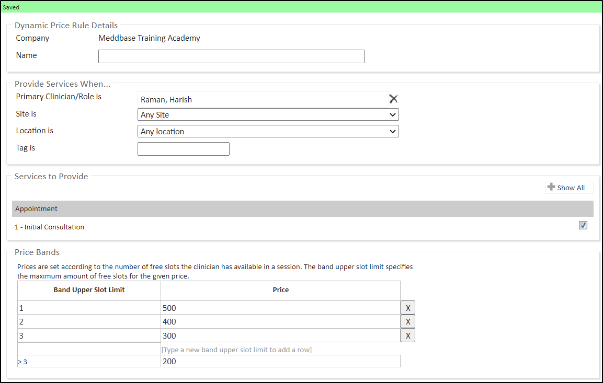
This rule can be added to a Charge Band where the doctor attending an appointment or a 3rd party act as the Billing Company and charges the chamber company a fee for attending an appointment.
For Self-employed doctors or Contractors, it may be beneficial to add a Billing Company for them to the system and select that company here.
That fee is calculated as a percentage of the cost of services consumed by the patient. You can set a Default Fee Percentage or specify different fee percentages for different appointments and services in the Service Fee Percentages section. If you specify both the Default Fee Percentage and specific Fee Percentages for some services at the same time, every service without a specific value will fall under the default fee percentage.
You can also specify which doctor or group, site, and location and which schedule the rule applies to.
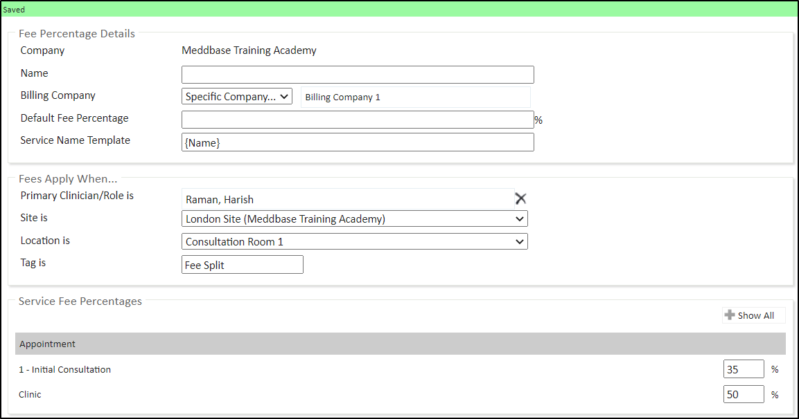
Adding this rule to a charge band has an effect very similar to the Fee Percent Rule discussed above.
The difference is that here you define the charges paid to the attending doctor or 3rd party company as a fixed amount as opposed to a percentage of the bill. Furthermore, you have to set the values for services individually, as you can not set a default value to be applied to all of them.
Adding this rule to a charge band allows organising appointments and services into groups and splitting them into separate invoices when they get consumed whilst crediting those invoices to one or multiple internal companies.
This can be very useful when an umbrella company has internal subsidiaries that sometimes need to serve as creditors on invoices.
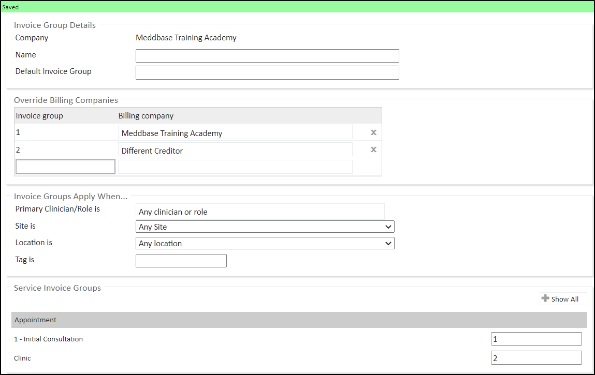
Adding this rule to a Charge Band allows discounting procedures when more than 1 is added to an appointment booking.
The are 2 ways of discounting multiple procedures
Let’s use an example. 3 procedures cost £100, £50 and £25 respectively. And let’s say the % value for Two services is 25% of the highest value service and the % value for Three or more services is 10% of the highest value service.
This means in this example, that if you book 2 procedures, the less expensive one will be charged at 25% of the more expensive procedure’s price, or in practical terms, if you book the £100 and the £50 procedures, the £100 procedure will be charged in full and the other one will be charged as 25% of £100, so £125 in total for both.
If you book all 3 procedures, so the £100, the £50 and the £25 one, the £100 procedure will be charged in full and the charge for the other 2 in this example will be 10% of £100, so £100 in total for all 3 procedures.
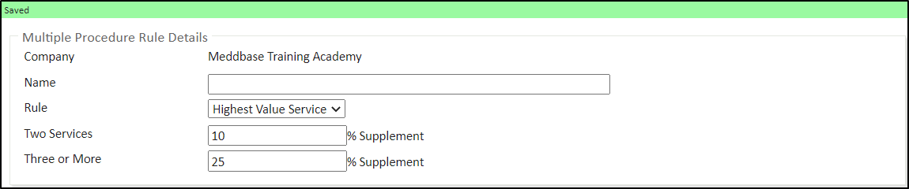
When added to an online-enabled Charge Band, this rule allows providing patients the ability to interact with Pathways via the Patient Portal.
This rule allows utilising the Meddbase Pathways System on the Patient Portal. Pathways are highly customizable, custom workflows made up of a series of steps where actions are carried out and can therefore help solve business-specific problems. For more information on using Pathways in your system, please contact the Client Account Management team on: accountmanagement@meddbase.com
Click here for more details on understanding Pathways
Click here for more details on Patients interacting with Pathways.
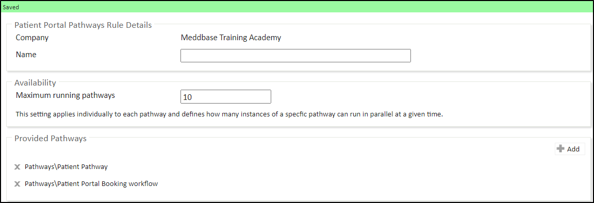
Adding this rule to a Charge Band is part of a larger setup process enabling patients to book appointments via the Patient Portal.
This rule by default allows patients to self-book the services selected in the Services Affected section. Click Show All and then click Add for the relevant service type. Tick the boxes for the services you wish to provide for online bookings.
The selected services first must be provided either via a Price List, a Provide Services Rule, or a Service Credits Rule.
Click here for more details on the Patient Portal setup.
Click here for more details on the Patient Self-Book Rule.
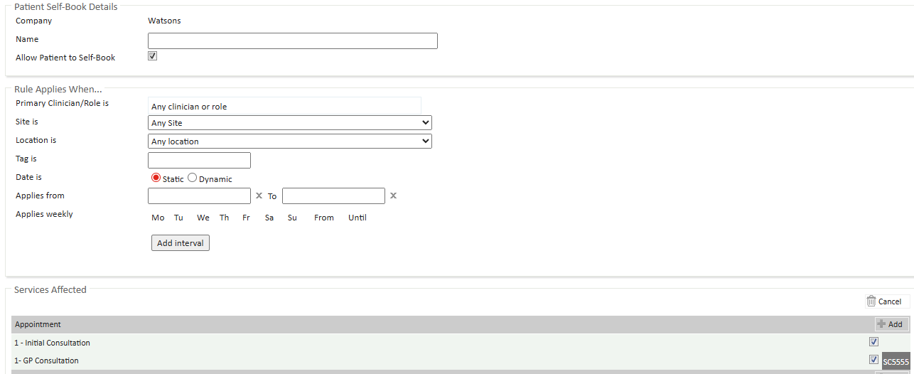
Adding this rule to a Charge Band is part of a larger setup process enabling 3rd party company managers to send referrals and/or book appointments via the Occupational Health Portal.
Utilising this rule is part of a larger setup of Occupational Health workflows in Meddbase.
You can also specify which doctor or group, site, and location and which schedule the rule applies to based on a shared tag.
You can also specify Static or Dynamic date ranges. The rules surrounding applying date ranges are explained in detail in the Basic System Configuration Part 4 video.
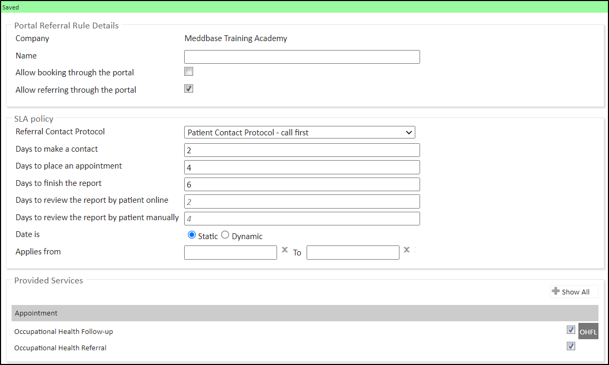
Adding this rule to a Charge Band allows increasing or decreasing all prices on an existing Price List by a specific %. This rule then serves as if it were a price list itself.
A Benefit Maxima payer type modifier rule is only valuable when used on a non-self-pay charge band, e.g. employer or insurer charge band.
Consider the example below:
The Total Charged Price and Benefit Maxima rules do not override one another, so can be in either order.
Click here for more details on the Price List Modifier Rule.
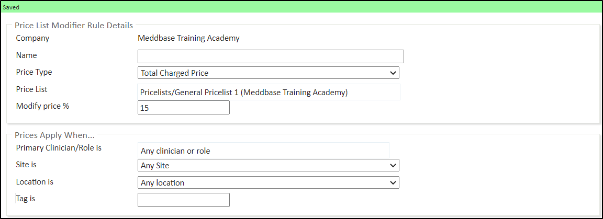
Adding this rule to a Charge Band allows overriding appointment type and service names when displaying them on an invoice, e.g., a safe name for an STD test.
You can specify which doctor or group, site, and location and which schedule the rule applies to based on a shared tag.
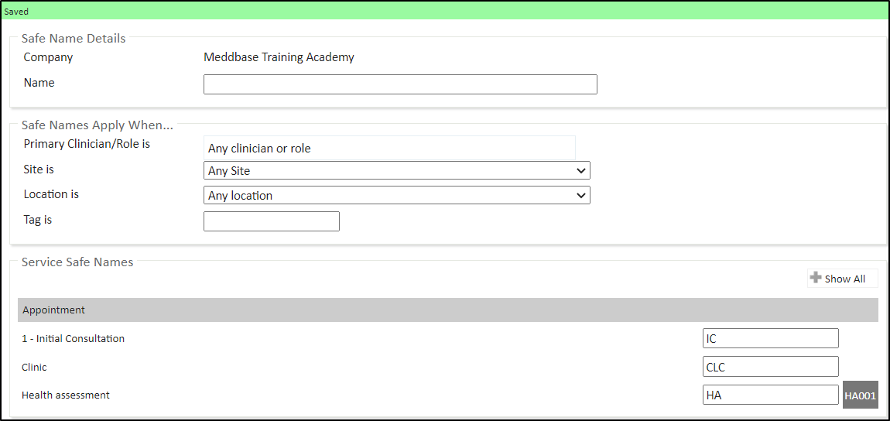
When added to a Charge Band this rule serves as a temporary Provide Services Rule and should therefore not be used on the same Charge Band with an actual Provide Services Rule in relation to the same services.
Please note that the Charge Band you choose to add this rule to must also include a Price List defining the same appointment types and services and the Provide Services with prices? Box unticked or a Price List Modifier Rule modifying an existing price list with the same box unticked also.
If the credited appointments or services are meant to be provided free of charge, the Price List added to the Charge Band must state 0 as their price.
When creating a Service Credit Rule, you must choose a Credit Type to decide how the credits are applied. There are 2 types:
Fixed Amount of Credits:
For example, a patient is given 5 free Physiotherapy Sessions per year. Once all 5 are used, they cannot book another free session until the year resets.
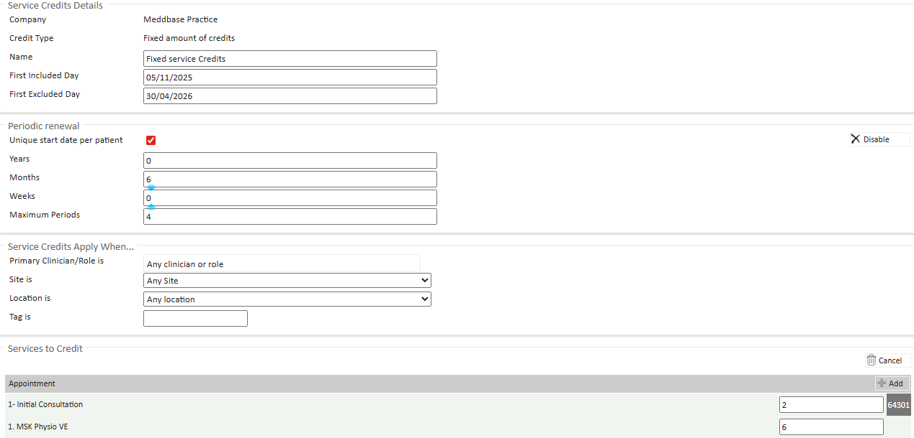
*Minimum Booking Interval:
For example, a patient books a Health Assessment in March 2025. Their next eligible booking is from March 2026. If they do not book in March 2026, the credit remains available until they use it.
Click here for more details on the Service Credits Rule.
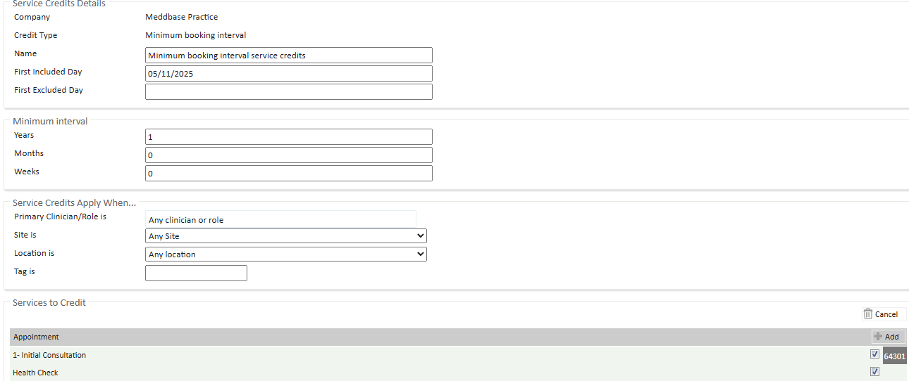
The Grouped Service Credits rule allows patients to book a combination of different appointment types within their session package while still adhering to the overall session limits.
With grouped service credits, a patient could, for example, book:
5 sessions from any of the available appointment types
A mix of 3 sessions from one type, 1 from another, and 1 from a third type
Or any other flexible combination of appointment types, as long as the total number of sessions matches their package allocation.
This approach provides the flexibility needed while maintaining control over billing and session usage within the predefined package limits.
The same Credit Type settings for Service Credits also apply here.
Click here for more details on the Grouped Service Credits rule
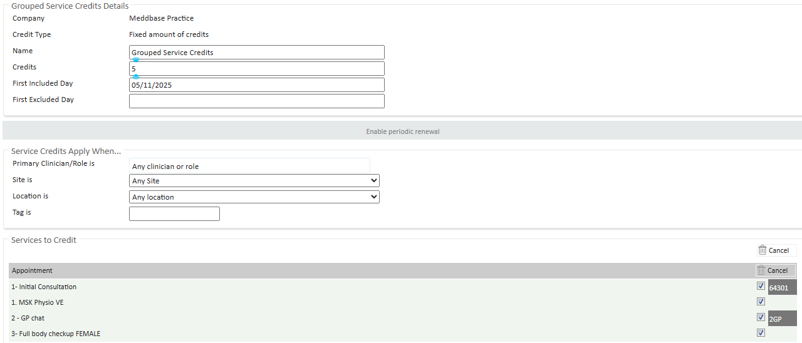
As mentioned, multiple times in this series of articles on Billing Rules, to perform the desired action a rule must be added to a relevant Charge Band(s).
Charge Bands are linked to the entity or company they have been added under, so it can not be moved to another entity.
The same does not apply to the remainder of Billing Rules. Even though the entity owns the rule, it can be applied to multiple Charge Bands belonging to multiple entities.
This has a very practical benefit in that you don't have to create a duplicate rule for every entity, assuming the same rule with the same configuration is supposed to apply on multiple charge bands.
When adding rules to a charge band in its Rules section, you will notice that having added more than 1 rule you will have the ability to change the rue display order by dragging and dropping rules into position.
This feature allows organising rules on a charge band according to their application priority. The system will use the first applicable rule in a given scenario, checking the list of rules from top to bottom, so the narrower and more specific a given billing rule is, meaning it only applies when specific conditions are met, e.g., the booking is with a specific doctor at a specific site, the higher it should be on the display list.
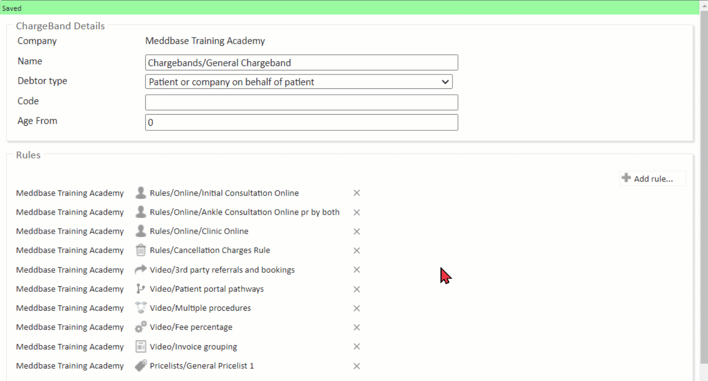